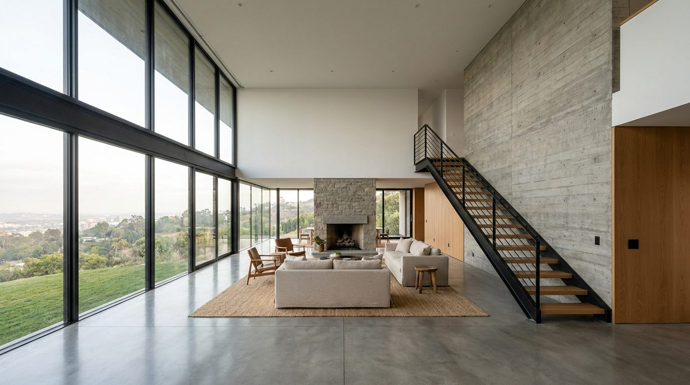

Atlante · FR-06 · Francia · Île-de-France
Duplex contemporaneo con vetrate
Esempi · esterno e interno


Perché funziona
la tipologia "nuovo lusso" (collezionismo, design anni 2000): vetro, doppia altezza, materiali freddi. Serve a bilanciare la serie storica.
Architettura · elementi riproducibili
- Doppia altezza 5–6 m, vetrata 3–6 m di larghezza, profili minimali
- Scala a sbalzo con gradini in rovere o pietra; parapetto in vetro
- Materiali: cemento a vista, rovere, ottone brunito, pietra grigia
- Illuminazione lineare a soffitto, binari neri
Luce
controluce ampia dalla vetrata, 5500–6500 K; interni in equilibrio tra luce naturale e luce artificiale neutra; riflessi controllati.
Prompt di generazione (EN)
Contemporary duplex apartment interior, 5.5 m double-height space, floor-to-ceiling glass wall with thin black frames overlooking trees, cantilevered oak stair with glass balustrade, micro-cement floor, low bouclé sofa, brass floor lamp, large abstract canvas. Strong even daylight from the glass wall behind the furniture, 6000 K, interior fill at 4000 K, clean reflections, no lens flare. 24 mm lens, f/5.6, camera at 1.5 m, two-point perspective, architectural photography, no people, 3:2.
Errori tipici da controllarevetrate che riflettono interni impossibili; scala che galleggia senza struttura; "lusso contemporaneo" declinato in marmo nero e oro (cliché da hotel).